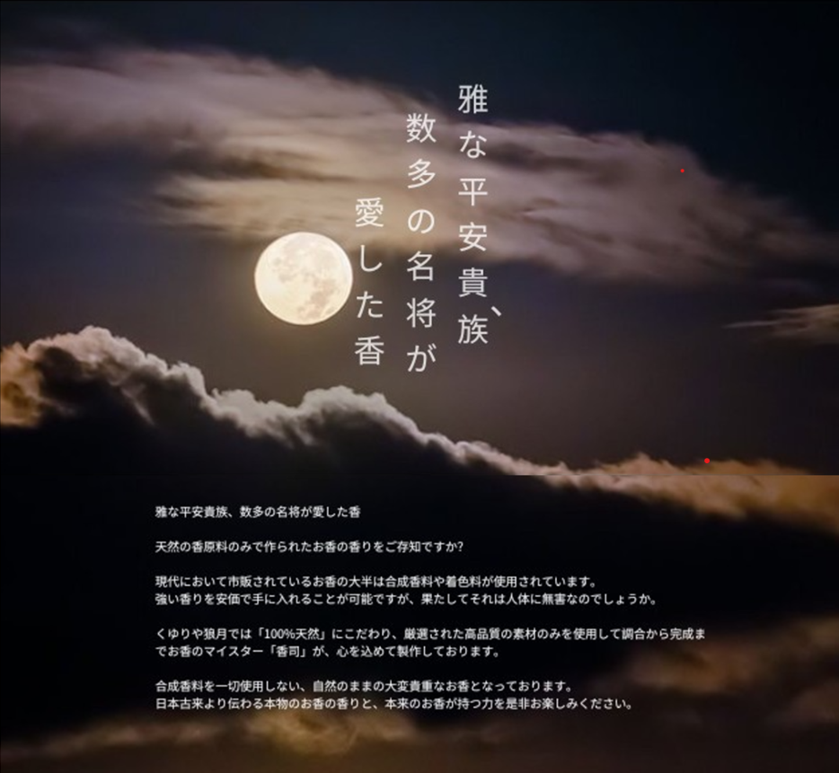
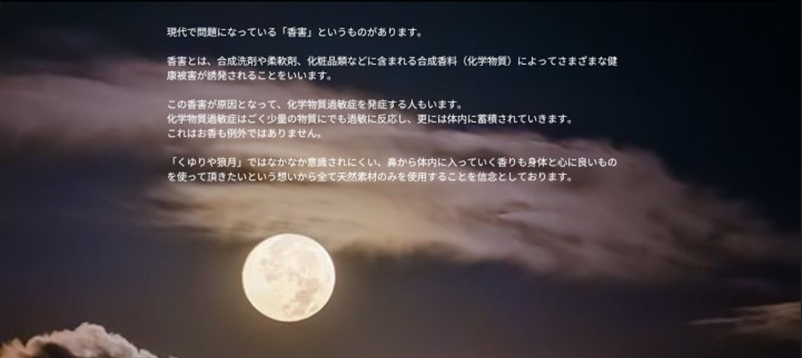
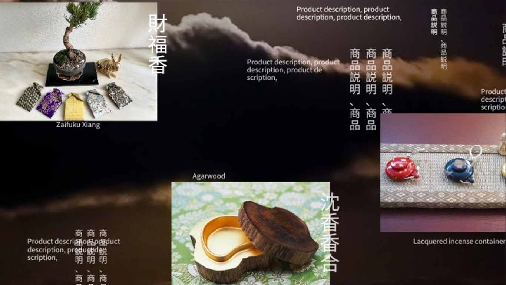

2024,09,01 / <
Japan
2024,09,01 / <
Japan
2024,09,01 / <
Japan
| |

その名の通り「香り」 を 「司る者。
築き上げた経験、 磨き上げた嗅覚や直感、
プライドを元にお香に関する一切の責任を担う職人のことです。
多くの香原料から理想の香りを作り上げるために、 調合から完成までの全工程を行います。
香司は、 江戸時代から始まった日本の伝統的な職業でもあります。
お
香
の
マ
イ
ス
タ

合
成
香
料
の
脅
威


現代で問題になっている 「香害」 というものがあります。
香害とは、 合成洗剤や柔軟剤、化粧品類などに含まれる合成香料 (化学物質) によってさまざまな健康被害が誘発されることをいいます。
この香害が原因となって、 化学物質過敏症を発症する人もいます。
化学物質過敏症はごく少量の物質にでも過敏に反応し、 更には体内に蓄積されていきます。
これはお香も例外ではありません。
「くゆりや狼」 ではなかなか意識されにくい、 鼻から体内に入っていく香りも身体と心に良いものを使って頂きたいという想いから全て天然素材の みを使用することを信念としております。